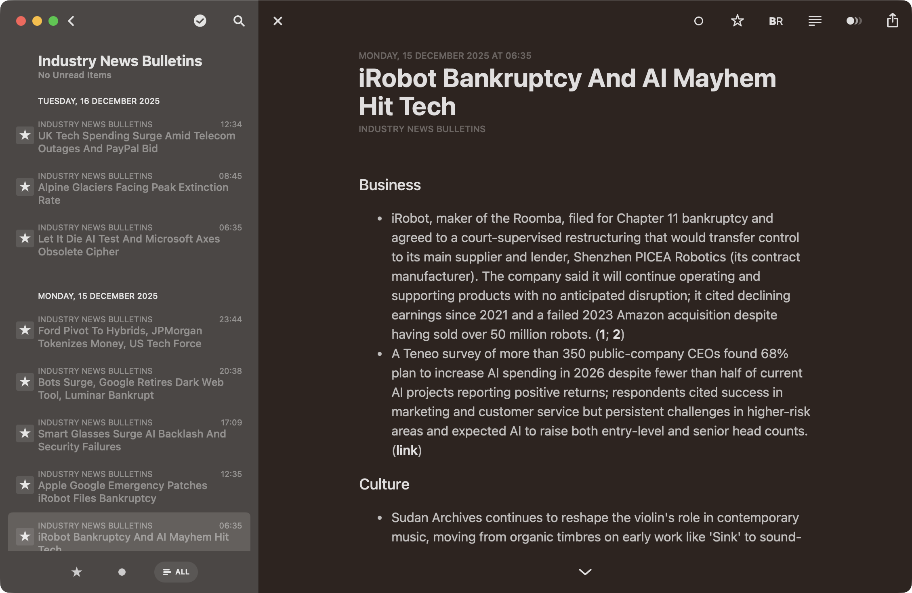

About
A daily RSS/Atom summarizer that fetches feeds, extracts full article text, and generates concise summaries using a local or cloud LLM. The output is the daily digest at feeds.carmo.io. Designed to run on a low-power ARM server as a cron job — no daemon, no queue, no database.
Features
What it does
Full-text extraction
Uses trafilatura to extract the actual article body, not just the RSS description snippet. Summaries are based on what the article actually says.
Local + cloud LLM
Supports Ollama for local inference (runs on a Raspberry Pi 4) and OpenAI/Anthropic for higher quality. Switch with one env var.
Cron-friendly
A single Python script. No daemon, no database, no message queue. Runs as a cron job, outputs static HTML and JSON.
Powers feeds.carmo.io
The live daily digest at feeds.carmo.io is generated by this script, running on a low-power ARM server.
History
Recent commits
2026-01-01
sync with private branch, reviewed duplicate logic
4870d834
2025-12-20
docs
103328da
2025-12-20
sync with private branch; refactoring
9f490d05
2025-12-16
item merging improvements
3c65b572
2025-12-03
cleanup
7ea046ee
2025-11-29
prompt
55eccfaf
2025-11-29
simhash merging and various fixes
a2620ccf
2025-11-21
import private repo
aa8be7c7
2025-11-21
Initial commit
feee24bd
Writing
On taoofmac.com
2026-01-17
My Rube Goldberg RSS Pipeline